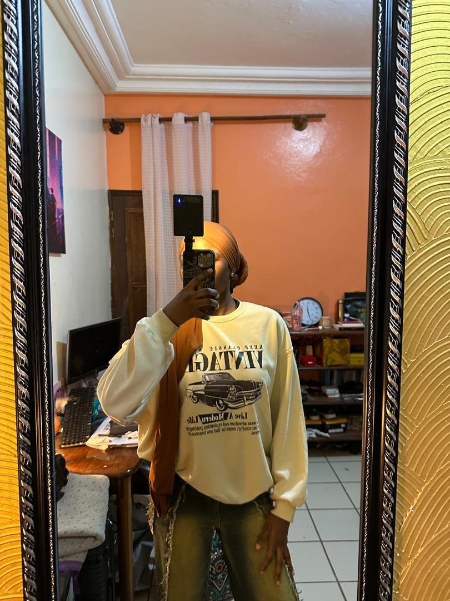
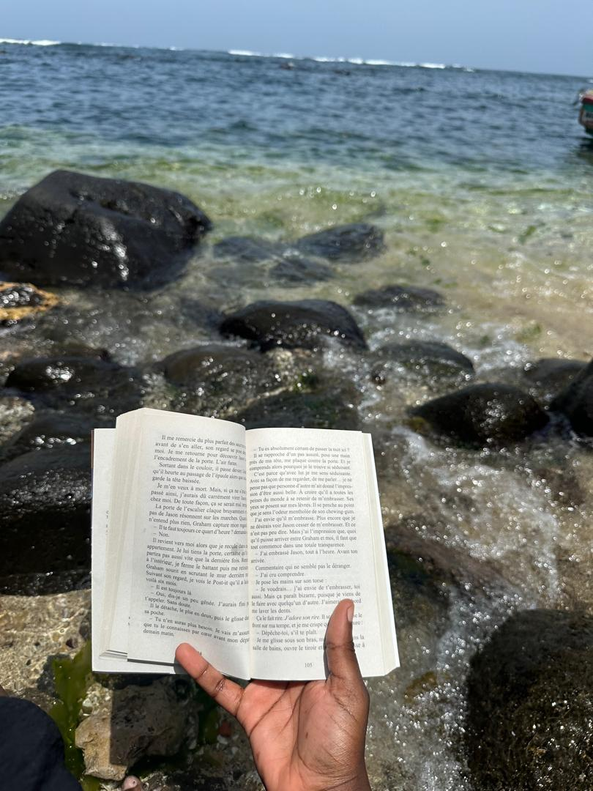
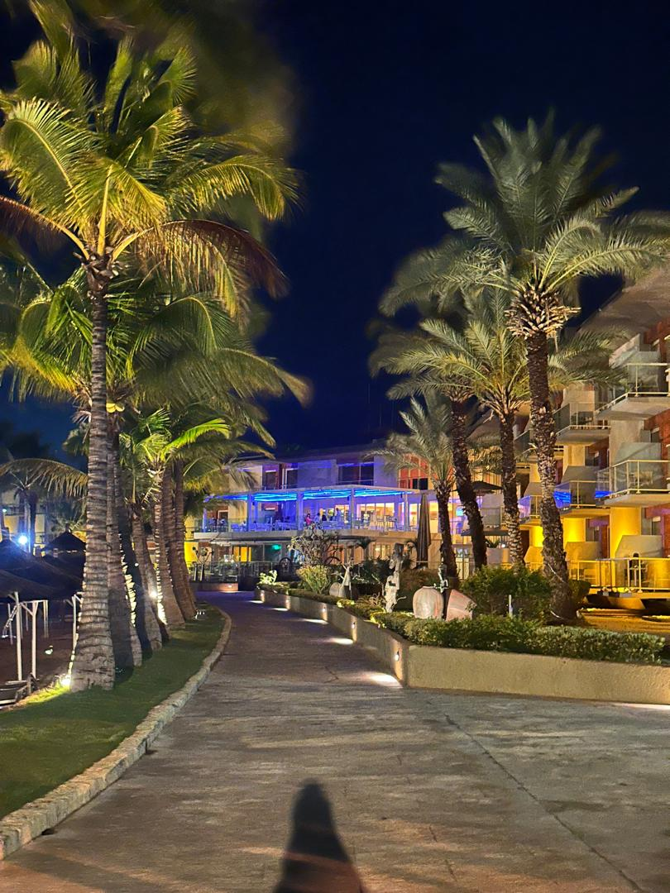
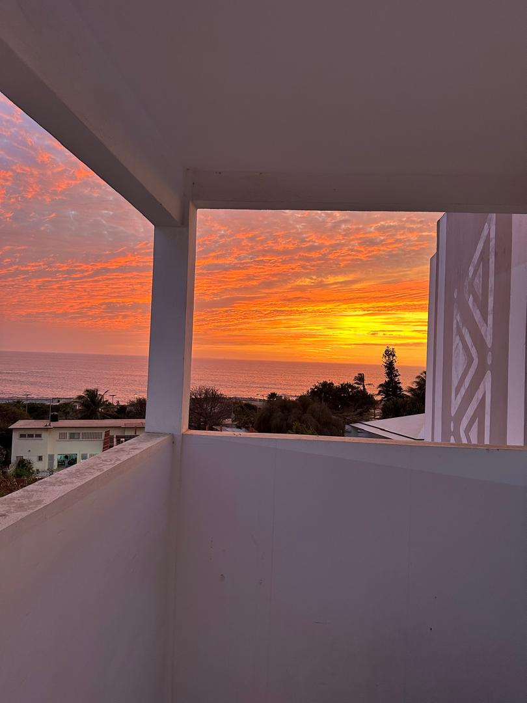
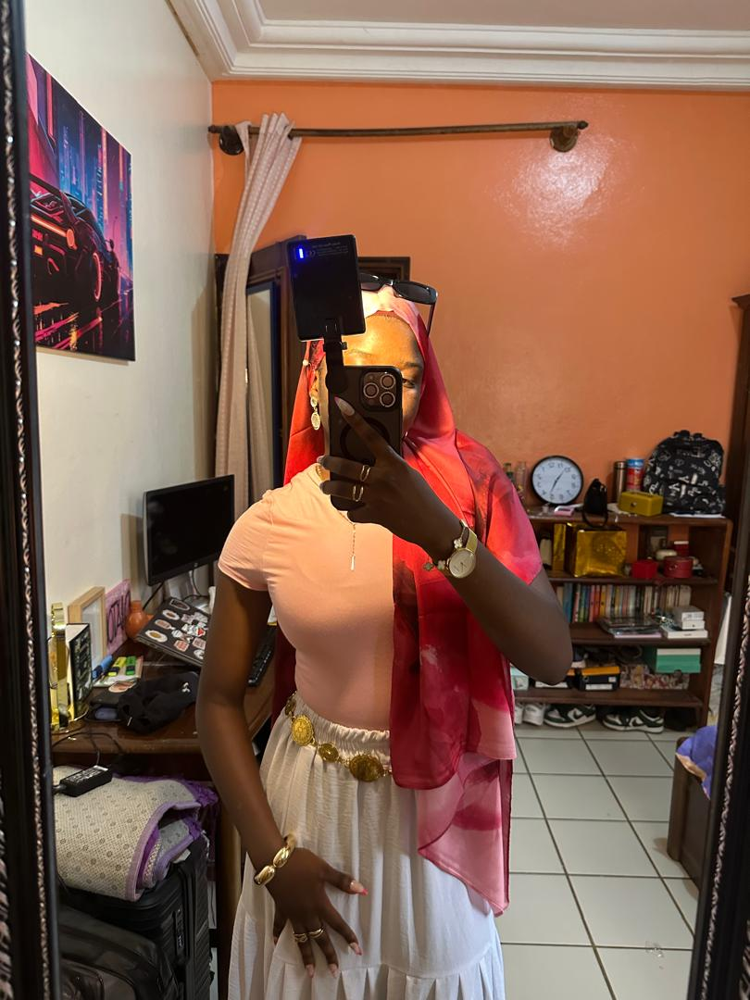

Mes hobbies
Entre deux sessions de code ou de modélisation, je quitte l'écran pour explorer d'autres horizons créatifs. Passionnée par le visuel, je cultive mon sens du détail et de l'esthétique à travers la photographie et la mode. Si la musique et la lecture nourrissent mon imaginaire au quotidien, la pâtisserie est mon terrain d'expérimentation favori, où la précision technique se transforme en gourmandise. Enfin, fervente amateur de football, je puise dans ce sport l'énergie du collectif et la détermination, des valeurs que je transpose volontiers dans chacun de mes projets informatiques.





